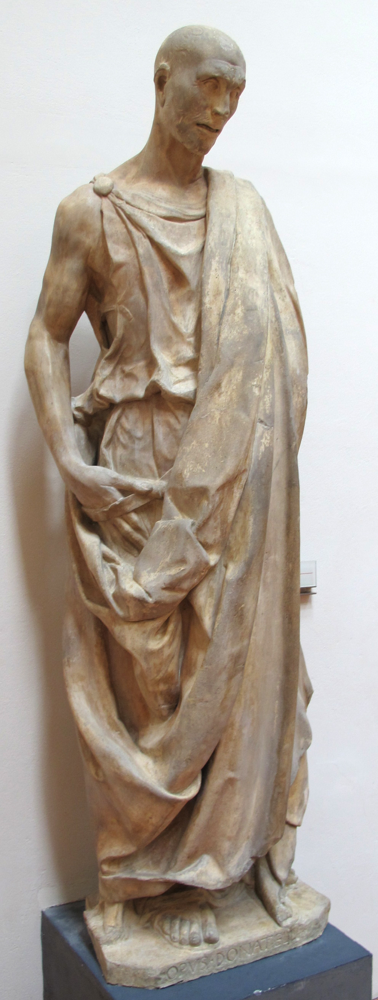
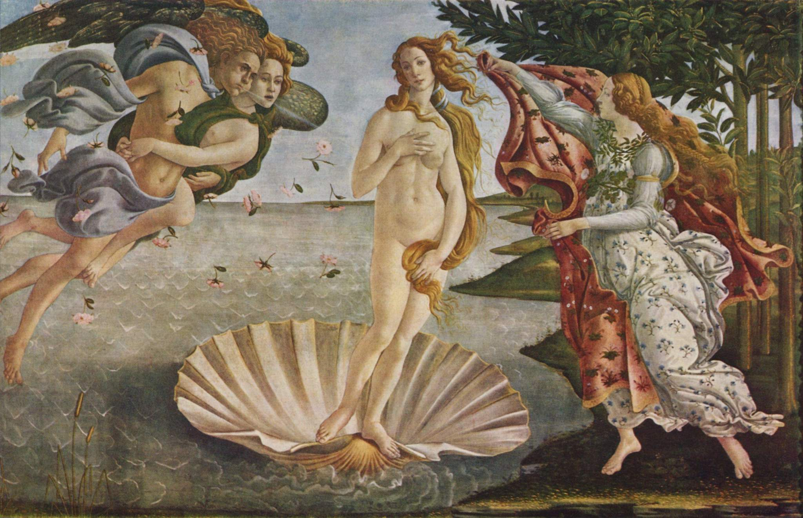
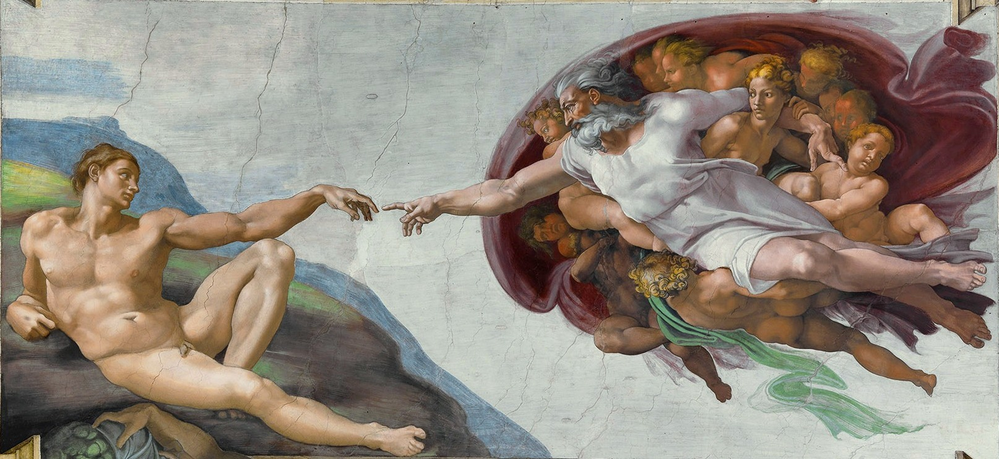
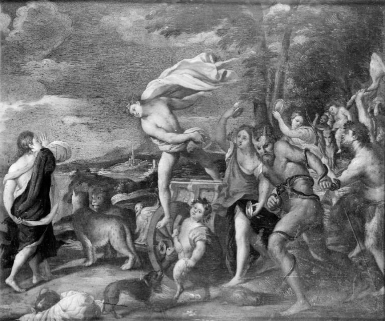

李奧納多·達·文西
畫家、發明家與自然哲學家。以暈塗法柔化輪廓，《最後的晚餐》與《蒙娜麗莎》展現心理深度與風景遠近。手稿中滿是解剖、水力與飛行器設計，體現觀察與實驗精神。
Rinascimento
約十四至十七世紀，歐洲在古典學問、透視與解剖學的基礎上，發展出以人為中心的新視野。以下介紹幾位在繪畫、雕塑與建築上影響深遠的巨匠。
「文藝復興」義大利文為 Rinascimento，意指對古希臘、羅馬文化與形式的「再生」。佛羅倫斯、羅馬與威尼斯等地成為創作中心，贊助制度與行會傳統則滋養了達文西、米開朗基羅等人的工作室與大型工程。
強調人的尊嚴與理性，文學與藝術題材從純然神學擴展到歷史、神話與肖像。
線性透視、明暗對照（chiaroscuro）與解剖研究，使畫面空間與人體更具說服力。
許多巨匠同時身兼建築師、工程師或詩人，作品與當代科學、宗教論述緊密交織。
依出生年代排序；圖檔已一併放在本專案 images/，由 GitHub Pages 直接提供，無需再向外部圖床熱連結。
畫家、發明家與自然哲學家。以暈塗法柔化輪廓，《最後的晚餐》與《蒙娜麗莎》展現心理深度與風景遠近。手稿中滿是解剖、水力與飛行器設計，體現觀察與實驗精神。

早期文藝復興雕塑巨擘。復興古典的立像與銅鑄技術，《大衛》青銅像與《加塔梅拉塔騎馬像》在動勢與心理描寫上影響後世至深。

建築師與工程師，聖母百花大教堂雙層穹頂的設計者，並以透視法則實驗聞名。與多那太羅等人合作，為十五世紀佛羅倫斯建築訂下理性與比例的新典範。

美第奇家族贊助下的重要畫家。線條優雅、色彩清澈，《春》與《維納斯的誕生》融合神話與象徵，呈現佛羅倫斯人文圈特有的詩意與哲思。

雕塑家、畫家、建築師與詩人。《大衛》大理石與西斯汀禮拜堂天頂畫展現強烈人體張力；晚年主持聖彼得大教堂工程，並留下動人的十四行詩。

以均衡構圖與柔和聖母像著稱。梵蒂岡簽字廳的《雅典學院》將哲學家群像置於宏偉建築空間，被視為文藝復興盛期「和諧」理想的縮影。

威尼斯畫派領袖，擅長富麗色彩與筆觸肌理。肖像、神話與宗教畫皆精，晚期作品色調更深沉，影響巴洛克與後世油畫語言。
文藝復興並非單一起點，下列為理解脈絡的幾個路標。
但丁、喬托等人在文學與繪畫上為「人的情感與空間」鋪路，常與「先文藝復興」相連。
佛羅倫斯洗禮堂北門銅門競賽，吉貝爾蒂勝出，象徵城市對公共藝術與古典語彙的重視。
布魯內萊斯基完成聖母百花大教堂穹頂，工程與透視理論並進。
達文西、米開朗基羅與拉斐爾在米蘭、佛羅倫斯與羅馬的活動，標誌「盛期文藝復興」的高峰。
威尼斯畫派（喬爾喬內、提香等）與手法主義（Maniera）在義大利延續並轉化文藝復興遺產。